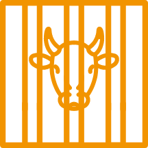
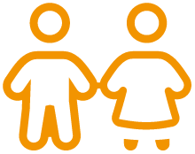

transmettre à welfarm
c'est offrir
une vie meilleure à
des milliers d'animaux
je demande ma brochure
transmettre à welfarm ,
c'est agir
durablement pour :
-

Améliorer le bien-être de tous les
animaux d'élevage -
Mettre fin aux cages, aux mutilations

et aux pires pratiques d'abattage -

Interdire les transports de longue durée et
par fortes chaleurs pour tous les animaux -
Obtenir un accès à un extérieur
aménagé pour tous
-

Sensibiliser les plus jeunes au respect de
l’animal et à une consommation responsable
par le biais d'actions éducatives dans les
écoles et les établissements de l'enseignement
secondaire, supérieur et agricole -
Offrir un lieu d’accueil à des
animaux de ferme dans le besoin.
choisissez
le projet de transmission
qui vous correspond
Pour pérenniser votre engagement en faveur du bien-titre animal, le legs, la donation ou l'assurance-vie sont autant de solutions qui s'offrent à vous.

Vous hésitez sur quelle solution choisir ?
N'hésitez pas à contacter Sandrine Dubois au 03 87 66 16 27
ils ont souhaité
offrir une vie meilleure
aux animaux

 J'ai toujours été scandalisée par les souffrances que l'on inflige à ces animaux que nous élevons pour nos propres besoins. En transmettant une partie de mes biens à WELFARM, je suis heureuse de pouvoir inscrire ce combat dans la durée.
J'ai toujours été scandalisée par les souffrances que l'on inflige à ces animaux que nous élevons pour nos propres besoins. En transmettant une partie de mes biens à WELFARM, je suis heureuse de pouvoir inscrire ce combat dans la durée. 
Maryse L., Clermont-Ferrand

Je soutiens WELFARM depuis longtemps, je connais le dévouement et l'engagement de leurs équipes pour faire progresser le bien-être animal. C'est pourquoi j'ai décidé d'aller plus loin aujourd'hui en effectuant un legs.
Bernard D., Rennes

En faisant bénéficier WELFARM de mon assurance-vie, je ne transmets pas qu'une somme d'argent, je transmets aussi mes valeurs et mon espoir d'un monde meilleur où les animaux seront enfin respectés et traités dignement
Christine P., Annemasse
leur générosité fait progresser
le bien-être animal :
merci à aux
GRÂCE À SES BIENFAITEURS ET BIENFAITRICES,
WELFARM FAIT PROGRESSER
LE BIEN-ÊTRE DES ANIMAUX D'ÉLEVAGE DEPUIS 1994

28 salariés
22 au siège et 6 à La Hardonnerie

Plus de 330 bénévoles
actifs dans toute la France

Plus de 500 animaux sauvés
dans notre ferme refuge et éducative

Plus de 29 000 membres et donateurs

7correspondants régionaux
Alpes-Maritimes, Bouches-du-Rhône, Gers, Loire-Atlantique, Nord, Pyrénées-Atlantiques, Savoie

Association reconnue d'utilité publique
Depuis 2010
WELFARM VOUS ACCOMPAGNE
N'hésitez pas à contacter Sandrine Dubois, notre chargée des libéralités :
 legs@welfarm.fr
legs@welfarm.fr 03 87 66 16 27
03 87 66 16 27